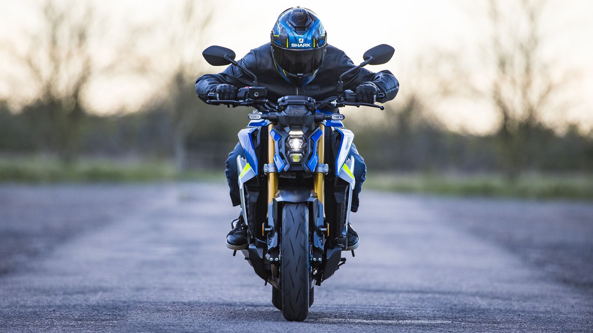

SUZUKI
The Suzuki GSX-S1000GX+
Is a sports crossover motorcycle that offers dynamic sports performance combined with long-distance capability and comfort¹. It is based heavily on the popular GSX-S1000GT sports-tourer².
Engine
The GSX-S1000GX+ is powered by a high-performance 999cc four-stroke, liquid-cooled DOHC inline four-cylinder engine¹. This engine is engineered to perform under all kinds of riding conditions, whether touring for long distances or out for a sporty run¹.
Performance
Its smooth, consistent power throughout its wide power band makes for an easy and exciting sports crossover riding experience¹.

Design
The GSX-S1000GX+ is designed to provide maximum comfort for a more relaxing and less tiring touring experience, for both rider and pillion¹.
Transmission
It features a semi-active suspension and next-generation rider aids¹.
Electronics
The GSX-S1000GX+ comes with a comprehensive suite of electronic rider aids offering fine and customizable control for your preferred riding style¹.
Price
As of now, the GSX-S1000GX+ is available at a starting price of £15,599¹.
The GSX-S1000GX+ is not just about speed, it has been lauded by many reviewers for its all-round performance². It's a motorcycle that's worthy of consideration for its speed and all its glory².